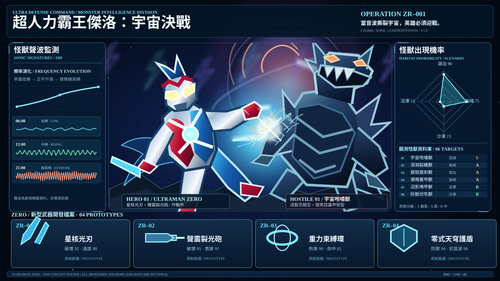

怪獸聲波監測
06:00 低頻、12:00 中頻升高、21:00 極高頻。海報中的三條波形是劇情示意，呈現怪獸吼叫隨日夜變化的特性。
當音波撕裂宇宙，英雄必須迎戰。

作品為粉絲創作概念海報。六隻怪獸、四件 ZR 武器、音波與棲地數據均屬虛構設定，不代表官方劇情或真實觀測。點選「下載 4K PNG」可在瀏覽器輸出 3840 × 2160 影像。
06:00 低頻、12:00 中頻升高、21:00 極高頻。海報中的三條波形是劇情示意，呈現怪獸吼叫隨日夜變化的特性。
虛構出現指數：湖泊 90、海域 75、沙漠 15、沼澤 12。
情境指數不等於統計機率；未加入城市與山區。